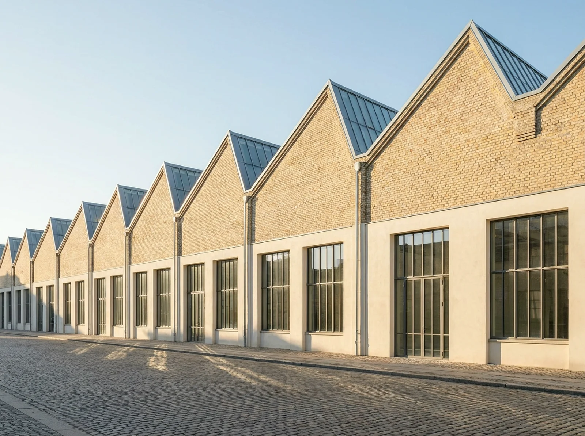

The Lantern Works
Former glassworks · 1911 · Havnsund N
North light only: the sun never enters, so nothing ever glares. The painters and the retouchers understood a century ago; the sawtooth roof still agrees.
Sun, working day
—
—
Floors open
—
—
From
—
—